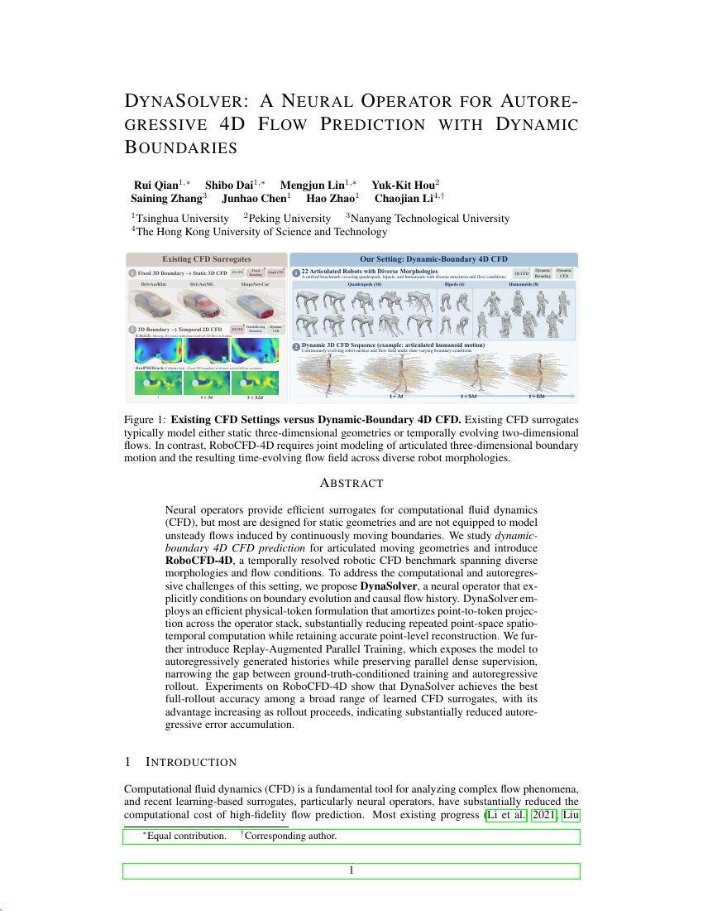
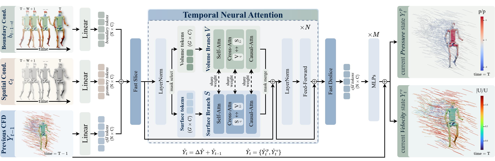

Abstract
Neural operators provide efficient surrogates for computational fluid dynamics (CFD), but most are designed for static geometries and are not equipped to model unsteady flows induced by continuously moving boundaries. We study dynamic-boundary 4D CFD prediction for articulated moving geometries and introduce RoboCFD-4D, a temporally resolved robotic CFD benchmark spanning diverse morphologies and flow conditions. To address the computational and autoregressive challenges of this setting, we propose DynaSolver, a neural operator that explicitly conditions on boundary evolution and causal flow history. DynaSolver employs an efficient physical-token formulation that amortizes point-to-token projection across the operator stack, substantially reducing repeated point-space spatiotemporal computation while retaining accurate point-level reconstruction. We further introduce Replay-Augmented Parallel Training, which exposes the model to autoregressively generated histories while preserving parallel dense supervision, narrowing the gap between ground-truth-conditioned training and autoregressive rollout. Experiments on RoboCFD-4D show that DynaSolver achieves the best full-rollout accuracy among a broad range of learned CFD surrogates, with its advantage increasing as rollout proceeds, indicating substantially reduced autoregressive error accumulation.
Teaser

Figure 1. Existing CFD settings versus dynamic-boundary 4D CFD on articulated robots (RoboCFD-4D).
Method Overview
DynaSolver predicts the next-step flow field conditioned on dynamic boundary evolution and causal flow history. It uses a physical-token operator stack for efficient spatiotemporal modeling, and Replay-Augmented Parallel Training to reduce rollout drift.

Figure 2. Overview of the DynaSolver architecture / training pipeline.
Citation
@article{qian2026dynasolver,
title = {DynaSolver: A Neural Operator for Autoregressive 4D Flow Prediction with Dynamic Boundaries},
author = {Qian, Rui and Dai, Shibo and Lin, Mengjun and Hou, Yuk-Kit and Zhang, Saining and Chen, Junhao and Zhao, Hao and Li, Chaojian},
journal = {arXiv preprint},
year = {2026}
}